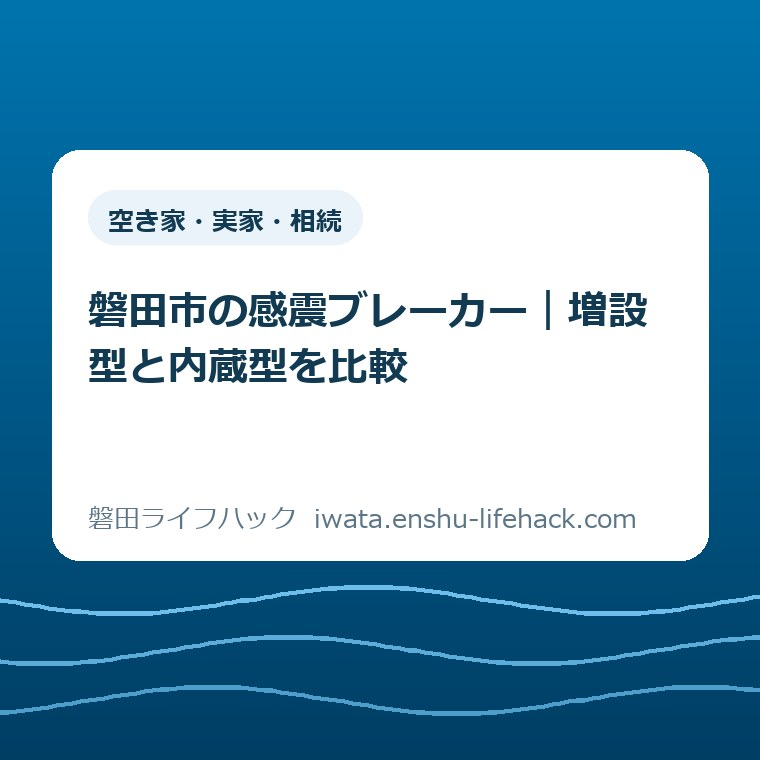

空き家・実家・相続
磐田市の感震ブレーカー｜増設型と内蔵型を比較

この記事の要点
Q. 実家に付けるなら、増設型と内蔵型はどちらがよい？
A. 磐田市の資料では、工事費込みの目安は内蔵型2～4万円、増設型4～7万円です。内蔵型は既存分電盤内の空きスペースを使いますが、設置可否は電気工事店の確認が必要です。2026年度の補助は予算上限で受付終了。補助を差し引かない総額で比較し、今日は分電盤の型番を確認してください。
実家の防災費用は、機器代だけでは決められない
感震ブレーカーの設置条件と費用は、実家の分電盤や配線、使っている設備で変わります。補助制度の適用も個別条件によります。親の予定を聞き、帰省の日を合わせ、費用を負担する家族同士で相談する。機器を買う前から、すでに時間と手間を払っているご家族に向けた比較です。
大石浩之（磐田市／不動産業）です。私は、実家の防災を「よい機器を買えば終わる話」にしたくありません。支払う人と住んでいる人が違うなら、金額に納得することと、設置後の暮らしに納得することの両方が必要だと考えます。
この記事では、今ある分電盤を使う増設型と内蔵型を比べます。申請書を順番に埋めるための記事ではありません。どちらが実家に付くのか、見積書の総額には何が入るのかを、家族が電気工事店に聞ける状態にすることが目的です。
2026年9月22日に磐田市公式の「感震ブレーカー設置費補助制度」と添付のQ＆Aを確認しました。先に伝えたいのは、2026年度の受付は予算上限に達して終了していることです。これから相談する家族は、補助を受け取れる前提で支出を組まないでください。
増設型と内蔵型の違いは、感震リレーを置く場所
磐田市の「感震ブレーカー設置事業費補助金 Q＆A」2～3ページでは、増設型と内蔵型の設置方法と費用目安を区別しています。感震リレーとは、地震の揺れを検知して電気を遮断するための部品です。どちらを使うかは、呼び名や価格だけでは決まりません。
| 比べる項目 | 増設型 | 内蔵型 |
|---|---|---|
| 設置方法 | 既存の分電盤に感震リレーを増設 | 既存の分電盤内の空きスペースに感震リレーを設置 |
| 工事費込み目安 | 4～7万円 | 2～4万円 |
| 見積もり前の確認 | 既存分電盤への適合と取付場所 | 既存分電盤への適合と内部の設置余地 |
| 可否を判断する相手 | 電気工事店 | 電気工事店 |
「内蔵型」という名前から、分電盤を丸ごと買い替えるものを想像するかもしれません。市の比較でいう内蔵型は、既存分電盤の中に部品を設置する方式です。名前の印象で大工事だと決めず、実家の分電盤を生かせるか確認する余地があります。
ただし、表面を見て空いているように感じても、内蔵型が付くとは判断できません。市のQ＆Aも、設置できるかどうかを含めて電気工事店に相談するよう案内しています。家族が確認する型番は、適合を調べてもらうための材料です。型番を読めたことと、設置可能と分かったことは別です。
私は、最初の相談で「内蔵型が付くか。付かないなら増設型ではどうか」と二段階で尋ねる方法を勧めます。安い方式への希望は伝えて構いません。そのうえで、難しい理由を聞く。空間なのか、機種への適合なのか、別の工事が必要なのかを分けると、家族にも説明できます。
増設型の見積もりでは、部品をどこに取り付けるのかも説明してもらいます。見積書に種類だけが書かれていても、親には完成後の姿が伝わりません。写真上で位置を示してもらうなど、住んでいる人が設置後を想像できる説明を求めるのが私の提案です。

総費用は「実家で工事を終えるまで」の金額で比べる
増設型4～7万円、内蔵型2～4万円という市の目安には、機器費用と取付工事費が含まれています。通販の本体価格だけと並べると、比較の条件がずれます。市の金額は個別住宅への見積もりでも、必ずその範囲で収まるという約束でもありません。
ここで私が勧める総費用の読み方は、機器代、取付工事、実家の状態に応じた追加作業を分ける方法です。見積書の合計について、税込か、現地確認後に変わる可能性があるかを聞きます。「工事一式」とだけ書かれている場合は、その一式に含む作業を確かめます。
たとえば、内蔵型の総額が3万円、増設型の総額が5万円だったと仮定すると、家族が比べる差額は2万円です。これは比較方法を示す仮の例で、磐田市内の実際の見積もりではありません。両方とも設置可能で、含まれる作業が同じ範囲かを確かめて初めて、差額が判断材料になります。
仮に片方だけに既存設備の撤去や別の配線作業が含まれていれば、差額の全てを機器の違いとは呼べません。見積もりを取り直す前に、条件をそろえる質問を一度する。そのほうが、安い店を探し続けるより家族の手戻りを減らせると私は考えます。
磐田市のQ＆A 5ページでは、既存分電盤や配線の撤去、既存分電盤の回路増設などを補助対象外としています。支払う工事の総額と、補助の計算に使う対象経費は同じとは限りません。制度上の対象外という言葉を、実際には費用がかからないという意味に読まないでください。
分電盤そのものの取替を勧められたときは、増設型と内蔵型の比較からいったん話を分けます。市の制度でも新築・分電盤取替は別の費用区分です。今回の2～4万円、4～7万円を、そのまま分電盤全体の取替費用として使うことはできません。
私は、取替の提案を受けたら「感震機能を加えるために必要な工事」と「既存設備の状態から勧められた工事」を分けて説明してもらいます。必要性を家族だけで否定するのでも、理由を聞かず追加するのでもなく、電気工事店の判断を予算の言葉に直すためです。
実家全体の改修も検討しているなら、耐震補強と耐震シェルターの比較記事も判断材料にできます。感震ブレーカーを付ける費用と建物を補強する費用は、目的の違う支出です。家族の予算表では項目を分け、どちらか一つで全て備えたことにしない整理を勧めます。
2026年度は補助率が変更され、受付も終了している
磐田市の制度ページは2026年6月24日更新です。2026年度から補助率を3分の2から2分の1へ変更し、予算上限に達したため受付を終了したと掲載しています。年度の申請期間が残っていても、現在申請できるという意味にはなりません。
市ページには増設・内蔵型の補助について、機器代金と設置費用を対象に、2分の1以内、上限3万円、1,000円未満切捨てとあります。ただし、この記事の確認日には受付が終了しています。この計算条件を、これから設置する家族の「もらえる金額」として使わないでください。
私は、これから取る見積もりでは補助見込額をいったんゼロとして、支払総額を確認するのがよいと考えます。自費で進めるかを決める場合も、費用の全体が分かってからです。受付の再開や2027年度の制度について、今回確認した資料から約束できることはありません。
市のQ＆Aには、補助は申請後の交付決定通知を受けてから着工したものが対象とあります。すでに交付決定を受けている家族は、今回の受付終了の話だけで自己判断せず、市から届いた通知と個別の期限を確認してください。新規相談の家族とは状況を分ける必要があります。
なお、Q＆Aの完了報告期限には、1ページの2027年3月31日と8ページの2027年3月12日という異なる日付が掲載されています。この記事では期限を一つに決めません。交付決定済みの方は危機管理課に確認してください。比較のための記事でも、資料内の食い違いを見過ごしたまま案内はできません。
磐田市危機管理課の連絡先は0538-37-2116、所在地は国府台3-1の防災センター2階です。私は、補助に関する疑問は市へ、製品と工事に関する疑問は電気工事店へ分けて聞く方法を勧めます。支払う家族が別居していることも伝え、申請者になれるかを費用負担だけで決めないようにします。
良い点——工事費込みの目安があり、相談の入口を作れる
私が磐田市の案内の良い点と考えるのは、機器の種類と工事費込みの目安が同じQ＆Aで読めることです。初めて感震ブレーカーを調べる家族でも、比較が数万円単位の話だと分かります。製品名だけを集めるより、実家の支出について話し始めやすい資料だと評価します。
内蔵型の目安が増設型より低いことも、相談する価値のある具体的な情報です。私は、この差を「安いほうに決める材料」ではなく、「安い方式が使えるか尋ねる材料」として使いたいと考えます。専門的な判断は任せても、何を確認したいかまで家族が手放す必要はありません。
設置可否を電気工事店に相談するよう明記している点も評価します。自分で機種を選び切ってから工事を頼む順番にしなくて済むからです。型番を持って相談できれば、家族の準備と専門家の確認がつながります。資料を読む努力が、製品選びの迷路だけで終わらない入口になります。
受付終了を市ページで確認できることも、家計には必要な情報です。補助率の説明が残っていても、冒頭の受付状況を読めば、これからの支出に見込んでよいか立ち止まれます。私は、金額の有利さだけでなく、使える時期を確認できることにも意味があると考えます。
注文したい点——安い順の一覧だけでは、実家には付かない
私が案内に注文したい点は、金額の比較と設置条件の比較を、もっと近い位置で読めるようにしてほしいことです。家族が知りたいのは「どちらが安いか」の次にある「うちでは選べるのか」です。見積もりを依頼してから選べないと分かる負担も、費用を担う側には残ります。
安い順に並べても、実家に付かなければ比較にならない。私はこう考えます。補助率が何分の一かという説明より先に、家族が払う総額と、誰が適合を確認するのかをそろえたい。これが、家計と段取りから制度を読む私の判断です。
私の提案としては、家族が渡せる相談メモに「今の分電盤のメーカー・型番」「候補方式」「取付位置」「総額」「追加作業」「未確認」を並べるとよいと考えます。全部埋めてから相談する書類ではありません。型番以外は空欄でも、工事店に聞く場所が見える形です。
公表資料の期限に異なる記載がある点は、市への確認が必要です。担当者個人を責めたいのではありません。家族が資料を読んでもなお確認の電話を一本増やすことになるため、同じ期限を迷わず読めるよう整えてほしいと、一事業者として望みます。
停電した後の暮らしも、機器選びと一緒に確認する
磐田市のQ＆A 3ページは、感震ブレーカーが建物全体の電気を遮断し、医療機器や防犯設備などに影響が出る場合があると説明しています。医療機器を使う方は申請前にかかりつけ医等へ確認するよう案内されています。価格だけを理由に方式を決めないための条件です。
私は、親が日常使っている電気設備を、工事店との相談時に伝える方法を勧めます。家族が留守の間に止まると困るもの、親だけでは操作を戻しにくいものがないかを聞く。必要な備えは設備によって違うため、家族の推測で「電池があるから大丈夫」と決めないようにします。
夜に電気が消えたときの明かり、設置後の点検方法、復旧時の操作説明を誰が聞くかも、私は見積もりの段階で話題にしたいと考えます。製品ごとの作動や復旧方法は、説明書と工事店の説明で確認してください。この記事を操作手順の代わりにはしないでください。
親の避難行動まで家族で共有する場合は、防災訓練を家族の確認につなげる記事が関連します。地震への備えを項目別に探したいときは、地震・津波への備えの案内も使えます。機器の契約と、日常の備えの確認を別々の宿題に分けるための入口です。
対案・結論——今日は分電盤の型番を確認する
増設型と内蔵型で迷うご家族に、今日私が勧める一歩は、実家の分電盤の型番を確認することです。購入する製品を決める必要はありません。メーカー名と型番が安全に読める表示にあれば、文字をメモするか写真で残します。
型番の確認のために、ねじを外したり、内部の配線に触れたりしないでください。高い場所へ無理に上がる必要もありません。安全に見える範囲で読めなければ「型番不明」として工事店へ相談できます。確認という小さな作業を、親に危険な作業を頼む理由にはしません。
離れて暮らす家族なら、写真を撮れるか親に聞くところからで構いません。難しければ、次に帰省する人が安全に見える表示を確認する予定を残します。今日の成果を購入の有無で測らず、型番が分かったか、分からないなら誰に確認を頼むかで測るのが私の提案です。
型番を確認できた後は、電気工事店へ「磐田市の実家で、増設型と内蔵型を比較しています。この分電盤に付く方式と、追加工事を含む税込総額を教えてください」と伝えられます。型番だけでは判断できない場合の現地確認についても、日程と費用の有無を聞いてから依頼します。

大石の視点——払う人と、使う人の納得をそろえる
私は、実家の防災費用を子が負担する場合でも、住む親の納得を置き去りにしないほうがよいと考えます。比較メモを前にするなら、最初に金額の欄だけを埋めるのではなく、親が説明を聞ける日を一緒に考えたい。設置後に誰が説明書を保管し、分からないときにどこへ連絡するかまで見渡せる支出にしたいからです。これは体験談ではなく、私の意見です。
私にも迷いはあります。補助を待たず備えを進めてほしい気持ちと、家計の負担を軽く見てはいけない気持ちの間です。だから一律に「自費ですぐ設置」とは言いません。実家に付く方式と総額が分からないうちは、その家族にとって妥当な答えを私は出せません。
一方で、予算が決まらないままでも、型番という材料は一つ増やせます。親に負担をかけずに確認できたなら、それで今日の一歩は済んでいます。見積もりを頼む人、説明を聞く人、支払う人の役割は、その材料を共有してから相談すればよいと考えます。
よくある質問
磐田市の実家で増設型と内蔵型を比べる際の疑問を整理します。回答は2026年9月22日時点の公表資料と、本記事で提案する確認方法に基づきます。
内蔵型のほうが安いなら、内蔵型に決めてよいですか？
磐田市の目安は内蔵型2～4万円、増設型4～7万円で、どちらも機器費用と取付工事費を含みます。ただし内蔵型は既存分電盤内の空きスペースを使う方式です。空いて見えるだけでは適合を判断できません。型番を電気工事店に伝え、設置可否と追加作業を含む総額を確認してから選んでください。
2026年度の補助金を引いた金額で予算を組めますか？
2026年9月22日確認時点で、磐田市は予算上限による2026年度の受付終了を掲載しています。これから相談する場合は補助を差し引かない総額で比較してください。受付再開や次年度の実施は今回の資料では確認できません。すでに交付決定済みの方は、通知と個別の期限を市に確認してください。
親だけでは分電盤の型番を読めないときはどうしますか？
型番が読めなくても、分電盤のカバーをねじで外したり、配線に触れたりする必要はありません。安全に見える表示だけを確認し、分からなければ型番不明として電気工事店へ相談します。高い場所への無理な撮影も頼まないでください。現地確認を依頼する場合は、日程と費用の有無を先に聞く方法を勧めます。
制度・金額・受付状況は変わる場合があります。住宅ごとの設置可否、製品選定、施工の判断は電気工事店へ確認してください。最後は磐田市公式の感震ブレーカー設置費補助制度を開き、補助に関する個別条件と最新の受付状況を市に確認してから進めてください。
参考にした公式情報
- 感震ブレーカー設置費補助制度／磐田市（2026年6月24日更新、2026年9月22日確認）
- 感震ブレーカー設置事業費補助金 Q＆A／磐田市（設置方式2ページ、費用・設備への影響3ページ、工事内訳5ページ。2026年9月22日確認）

最終確認日：2026-09-22 ／ 本記事は公表情報と執筆者の見解を分けて記載しています。制度・数値・公開状況は変更される場合があるため、最新情報は磐田市公式ページでご確認ください。